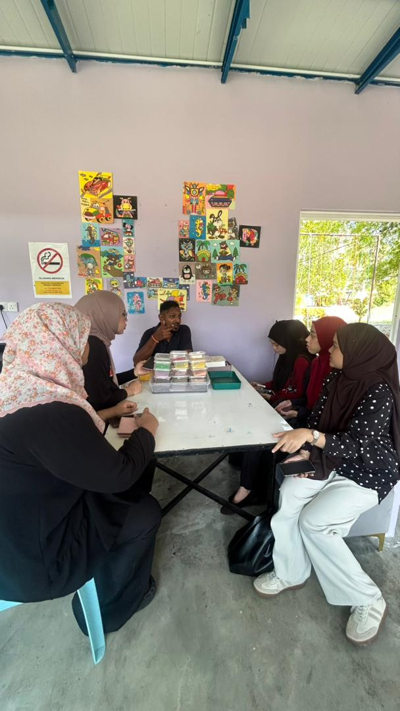
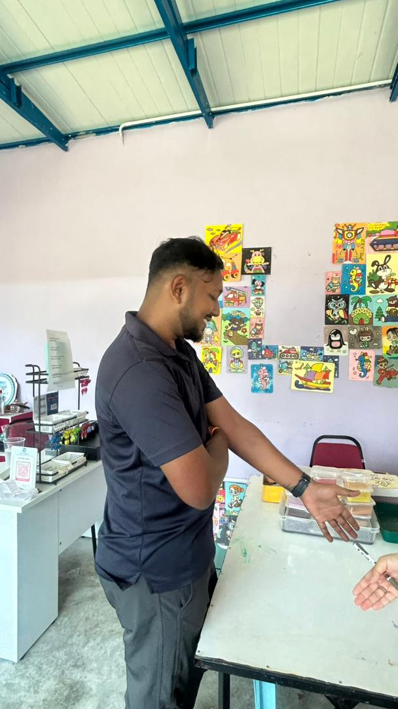
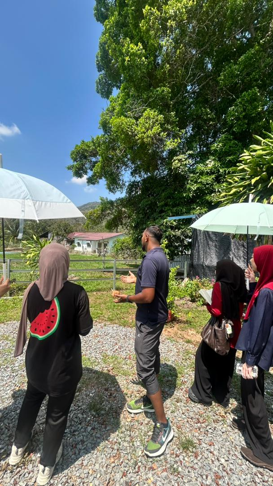

Assisting visitors by providing clear explanations about the park’s attractions, facilities, and activities. The staff also guide tourists, answer questions, and ensure visitors understand how to fully enjoy their experience.

Managing bookings, preparing activity areas, and ensuring all facilities are clean and safe. Staff also monitor activities and assist visitors to ensure smooth daily operations.

Strong communication, patience, teamwork, and problem-solving skills are essential. A friendly attitude helps create a positive and enjoyable experience for all visitors.
Mr. Burn plays an important role at YL Recreation Park by assisting visitors and ensuring smooth operations. His contribution helps create a positive experience for tourists while promoting the park as a relaxing destination.
Overall, his role supports tourism development in Perlis and enhances visitor satisfaction through excellent service and communication.